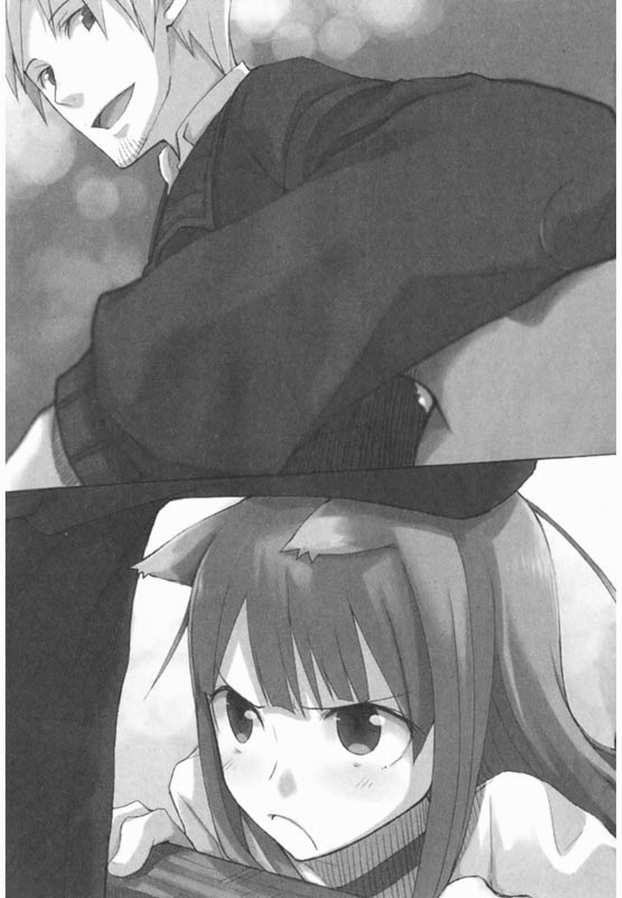

雖然現在是嚴寒季節，但偶爾也會有風和日麗的日子，讓人錯以為春天已經來臨。
這一天沒有風，即使是靜止不動地獃在那裡，也能感覺到陽光的炙熱。
就算是再怎麼惜時如金的商人，也會在這樣的日子稍事休息，將運送貨物的馬車趕到路邊，挑選一片已被牛羊吃得光禿禿的草地打個盹。
放在身旁的，只有幾瓶葡萄酒和黑麥麵包。
一邊眺望着天空，一邊不時啜飲幾口葡萄酒，咬下一塊黑麥麵包。
常常是連咀嚼都覺得麻煩，乾脆懶洋洋地叼着麵包打起瞌睡來。
蓋在身上的毛毯暴曬在太陽下，暖和得讓人以為是躺在暖爐旁邊睡覺。
耳朵聽到的只有小鳥的嘰啾叫聲，還有陽光灑向大地的聲音。
這是只有旅行者們才有權利得到的享受。
這樣的權利完全可以讓人為之着魔。
整個事情，開始於一張地圖。
當人們終於不再呵欠連連的時候——也就是太陽已經高掛天空的上午，駕駛着載貨馬車四處旅行的行商者羅倫斯終於厭倦了往返于一成不變的道路，少見地翻開了地圖。
這張地圖是幾年前和另外一張藏寶圖——裡面標記了一筆子虛烏有的財寶——用兩張三文錢的價錢一起買來的。
藏寶圖是用劣質的紙做成的，現在已是一副支離破碎的樣子，不過這張地圖卻是用羊皮紙做成的，十分結實，倒還頗具實用性。
羅倫斯一行前進的道路一直與森林平行，延伸向遠方。
這些道路几乎寸草不生，稱其為荒野也不為過，但是這座森林裡卻一年四季都生長着茂密的樹木，連陽光都難以照射進來。
不過，聽說因為從前在這座森林附近建設新城鎮的時候，採伐了大量的樹木，現在森林面積已經縮減到原來的一半了。
此刻羅倫斯手上的地圖正是按照這座森林以前的面積繪製的，從上面可以看出過去位於此地的森林是多麼廣闊無垠。
“怎麼了?”
躺在馬車後面的旅伴赫蘿，注意到羅倫斯坐在駕駛座上翻閲着什麼，於是開口問道。
羅倫斯轉過頭，看到總是打扮得像個修女的赫蘿正懶洋洋地躺在貨物上，歪着頭看向自己。
“這裡有個採伐場啊。”
“採伐場?”
“是很久以前的事了。就是把樹木砍伐下來供應給別人的地方。”
不過，引起羅倫斯興趣的當然不是這片森林曾經如何的廣闊。
他將視線投向通往森林的道路，想到在路的前方也許會有草原。
“哦，也就是在這條路的前面?”
羅倫斯重新將目光凝聚在眼前的地圖上，對赫蘿說明了情況。
“這片森林是被兩條路包圍在中間的。我們現在所在的這條路由於是連接着城鎮和村莊的必經之路，有大量的牛群和羊群從這裡通過，所以就變成了這麼一副光禿禿的模樣。不過，包圍森林的另一條路，也就是森林的另一邊應該有一大片豐茂的草原吧。”
“豐茂的草原?”
赫蘿一動也不動，只應了一聲。
“即使是這個時節，斜坡上也應該長滿了碧綠的青草吧。”
赫蘿沒有吱聲。
羅倫斯稍微有點在意地轉過頭去，看到她正一臉不高興地盯着自己。
“咱又不是羊，就算是有青草也不會覺得高興。”
她的聲音聽起來完全不感興趣。
如果有人偶然從馬車旁邊經過的話，一定不明白這番對話的意義吧?
當然，他們也並沒有用什麼奇怪的措辭。
只是，赫蘿的頭頂上聳立着絶對不是人類所有的美麗狼耳，後腰上還長着毛茸茸的尾巴。
雖然從外表看來彷彿是個十來歲的少女，但她真正的姿態卻是能輕易將人囫圇吞下的巨狼。
要是有人對赫蘿的話百思不得其解，那麼在看到她真正的樣子之後，就絶對能理解其中的含義了。
“那還真是抱歉了。不過，只是為了放牛牧羊而使用的話，未免有點浪費了。”
“嗯?”
“那裡有太陽光啊。位於斜坡上、能充分吸收陽光的草原，不是很具有吸引力嗎?”
一瞬間，赫蘿的眼睛似乎看向了某個並不存在的地方，然後尾巴立刻在手中晃動起來。
她的想象力極為豐富，所以應該能正確理解這片草原的使用方法吧?
因此，當她再次開口的時候，便拋出一個單刀直人的問題。
“但是汝不是要趕路嗎?”
日光穿過森林灑在草原上，對於時間就是金錢的商人來說，躺在這裡睡午覺無異於往脖子上套絞繩。
不過，雖然赫蘿似乎是擔心延誤行程才開口詢問的，但她的眼眸中卻充滿了致命的魅惑，恐怕連那些令歷代皇帝神魂顛倒的絶世美女們也會自愧不如、落荒而逃吧。
這樣一來，無論是誰都無法拒絶她了。
再加上赫蘿還擺着尾巴懇求着。
而如果這樣能夠取悅羅倫斯的話，就算多少耽誤一些行程，他應該不會在意了吧。
更何況，對於羅倫斯而言，只是悠閒地曬曬太陽就可以讓赫蘿高興的話，應該會有賺到了的感覺吧?
本來旅途就很枯燥乏味，毫無娛樂可言，在適當的時候稍微放鬆心情，消遣一下也是必要的。
“為了能走更遠的路，休養生息是必需的。但怎麼說呢，你還是不要抱太大希望比較好……”
“怎麼說?”
羅倫斯“嘩啦嘩啦”地翻動着地圖。
“畢竟，現在還不能確定地圖上面說的是否正確。如果穿過森林很困難的話，還是放棄比較好。“
倘若對方是個任性的小孩子，也許這個提議很難說出口。但幸好她是被稱為賢狼的赫蘿。
她很理解羅倫斯是在腦子裡做了怎樣的盤算之後，而給出了這個提議。
本來是仰面躺着梳理尾巴毛的赫蘿，此刻翻了個身趴在貨台上，仰着臉看著羅倫斯。
“什麼嘛，咱覺得還是能在樹蔭斑駁的陽光下打盹比較好。”
剛纔羅倫斯說起草原的話題時，是赫蘿在想象着那副情景；而現在則是羅倫斯開始想象赫蘿提到的場景。
一年四季都不落葉的樹林中，偶爾一陣微風拂過，枝葉發出沙沙的聲音。兩個人躺在從枝葉縫隙照射進來的陽光下，一邊聆聽著風聲一邊優雅地小憩，這樣的場面的確很不錯呢。
羅倫斯從想象回到現實，他望着赫蘿用眼神無聲地詢問：“怎麼樣?”
“還不錯。”
“那就這麼決定了。”
羅倫斯放下地圖拾起了繮繩，赫蘿則翻個身繼續小睡。
運貨的馬車朝着森林深處繼續前行。
此時是陽光明媚，呵欠也消失得無影無蹤的中午時分。
森林中蜿蜒的小路似乎有人走過的痕跡。
是獵人，還是採集樹木果實的人呢?或者是來尋找野生蜂蜜和砍柴的人吧?總之，道路被維護得還不錯，即使是馬車也能夠輕鬆地進入森林。
森林中既沒有過分安靜，也沒有過分喧閙，作為一次輕鬆愉快的繞遠路之行是再適合不過了。
進入森林之前，因為對羅倫斯有所顧慮，赫蘿沒有喝酒。不過現在，聽到林中小鳥的嘰啾之聲猶如佐酒美餚，她便又不由得喝起葡萄酒來。
當然，本來就打算繞遠路的羅倫斯也並沒有生氣。
他只是一邊回頭叮囑着“不許全部喝光哦”，一邊又不時從赫蘿手中接過作為“賄賂”的酒袋，自己也喝上幾口。
根據手中的地圖，羅倫斯與赫蘿兩人前進的道路，是一條縱向延伸的小路，它將細長的森林橫切為兩部分。從形狀上看，正是在森林的“脖頸’’部分。也就是說，從這條道路走的話，可以不必繞彎路，能非常方便地穿過森林。
不過道路的走向偶爾也會與地表徵圖示不符，比如現在——在順利地前行了一段之後，道路突然變得寬廣起來，並且向右拐了一個彎。
然而，地圖上卻沒有標記這條路，看起來也不像是因為樹木倒塌導致原來的道路不能通行而開闢的新路，倒像是原本就有這麼一條路。
雖說是地圖上沒有標記的道路，不過又不是分岔口，所以沒什麼好猶豫的吧。
羅倫斯如此判斷道，繼續策馬前行。
“冬天的森林啊……”
坐在貨台上的赫蘿忽然開口說道。
“如果不是大白天，而是清晨來就好了。”
拐彎之後，道路兩旁的風景已不再迷人，只有大片的沼澤和惱人的樹根，讓人擔心車輪不知道何時會被纏住。所以羅倫斯不用回頭看，也能從她的語調猜到，酒精已經開始發揮作用了。
“為什麼?”
“唔，這片森林的地面上也堆積了不少了落葉吧?因為夜裡的溫度較低，落葉會吸收潮氣變得濕潤。天亮之後被清晨的陽光一照射，就會升騰起白色的霧氣。這個時候深呼吸一下的話……”
“對已經習慣于冬天乾燥空氣的肺部來說，再也沒有比這種濕潤的空氣更好的東西了。”
羅倫斯接過話頭繼續說道，赫蘿滿意地點了點頭。
“不過中午時候來的話就是夏天的森林了。強烈的日光透過樹枝照射到臉頰上，就像是被鳥兒的羽毛輕輕撫摸一樣吶。”
“可是，夏天的森林裡蚊蟲實在是太多了。”
羅倫斯也算是常年漂泊于旅途的人，對於森林在一年四季中的優點缺點還是很清楚的。
果然，背後傳來了赫蘿咯咯的笑聲。
不必轉過頭去，赫蘿那在夏日的陽光下不勝其煩地擺動着尾巴驅趕蚊蟲的樣子，便已清晰地浮現在羅倫斯的眼中。
“唔，森林可是個好地方。不過這一帶基本上都是……呵……平原……”
差不多到了該睡午覺的時候了吧。
赫蘿一邊打着呵欠一邊說話，把不知道是毛毯還是什麼的東西揉得嘩嘩作響。
反正距離目的地草原還很遙遠，乾脆先睡上一覺好了。而看到如此打算的旅伴，羅倫斯提出了抗議。
“不僅僅是森林，平原或者是別的地方也都有自己的有趣之處啊。”
“哦……?”
“就是和旅伴一起，天南海北無邊無際閒聊的時候啊。”
風和日麗的時候，平原上單調乏味的旅途在某種意義上就像是在磨練人的耐性。
如果馬車後面的那個人悠閒地睡着午覺的話，對於不得不獨自一人手執繮繩趕路的羅倫斯來說可是一點都不有趣。
因此，即使羅倫斯不說這番話，聰明的赫蘿也能猜到。
她輕巧地把下巴擱在駕駛座的靠背上，一臉淘氣地盯着羅倫斯。
“太不巧了，因為咱是狼，所以並不喜歡那種咬文嚼字的對話。”
輕微的反擊。
羅倫斯順着她的話說道。
“那麼，來熱烈地討論一下晚飯吃什麼的問題也不錯吧。”
赫蘿略微撅起嘴唇。
“比起討論晚飯，倒不如來做點其他激烈的事情?”
赫蘿半閉着眼，耳朵輕輕地在羅倫斯的手腕上摩擦。
千萬不要以為她醉意朦朧就掉以輕心，其實此刻正嚴陣以待地等對方自投羅網——這是她的一貫作風。
總之，還是當成她單純只是耳朵有點癢，想蹭一下比較好。
“激烈?是那種的嗎，不知不覺中就面紅耳赤的那種?”
“唔……嗯～”
如果赫蘿只是小貓小狗的話，完全可以大力摩挲幾下，再丟給她一片肉乾。不過不幸的是，她可是會瞧準對方鬆懈之際，將別人一口吞下的狼。

羅倫斯抬起手臂，輕輕壓在她的頭上。赫蘿立刻從喉嚨深處發出了生氣的嗚嗚聲，不滿地瞪着他。
“只要想到你到底喝了多少酒，應該就會‘面紅耳赤’了吧。”
“……咱才沒有喝那麼多。“
赫蘿是那種即使喝了酒也不會反應的體質，她看起來臉色十分正常，完全沒有什麼改變。
不過，稍微有點在意羅倫斯旁敲側擊的抱怨，赫蘿從他手臂下掙脫出來，使勁兒擦了擦臉。
“咱只是喜歡在陽光普照的草原小酌一杯。”
“咱又沒有喝那麼多。”
赫蘿不滿地抱怨着，縮回到貨台上重重地一躺。
看樣子似乎真的生氣了，也許她剛纔喝酒的時候為了留出給羅倫斯的份，特意斟酌着喝吧。
當然自己不是不相信她，不過，赫蘿多半不會覺得剛纔那句調侃的話有趣吧。
要不要稍微道個歉呢?羅倫斯這樣想著，回頭看去，正巧和赫蘿目光相對。
這時赫蘿一臉壞壞的微笑，與羅倫斯的嘆息形成了鮮明的對照。
原來這是赫蘿為了讓羅倫斯感到擔心，最終忍不住回頭看著自己而耍的小把戲。
“哼，老實說，咱更喜歡以那種天馬行空、不着邊際的方式閒聊。這其中最喜歡的話題是……”
“比如說，戲弄可憐的旅行商者?”
“唔?嗯，那種也不錯。”
道路仍然在森林中蜿蜒，看不到盡頭。還沒到草原嗎?羅倫斯‘抬頭望向遠處，這才發現不知何時又出現了一條平行的道路，似乎和腳下的這條路交叉在不遠的前方。
對於赫蘿的回答，羅倫斯只是聳了聳肩，然後取出地圖研究起來。、 “那麼，你喜歡什麼樣的話題?”
羅倫斯漫不經心地問了一句。他一會兒盯着地圖看，一會兒觀察腳下的道路，還時不時向遠處望去，好像自己的視線可以穿過樹林直達對面一樣。
看來除了羅倫斯他們現在所在的道路之外，森林裡還有好幾條其他的路。
而且羅倫斯感覺，這些路似乎還很複雜地交叉在一起。
既然如此，是不是應該在迷路之前返回比較好呢?
羅倫斯考慮着這個問題時，脖子上忽然感到針扎般的視線，回頭一看，赫蘿正神情不悅地搖晃着尾巴：“……咱可一點都不喜歡這樣聊天。”
一瞬間，羅倫斯的頭腦一片空白。
不着邊際的閒聊可不是對劉方敷衍了事。
因為自己一直以來都是獨自旅行，從來都沒注意到這一點，真是遲鈍呢。羅倫斯趕快老老實實地道歉，然後再次問道：“抱歉。那麼，你喜歡什麼話題?”赫蘿一怔：“汝把咱當成小孩子嗎?”“誒?”
“所謂談話也有它的流程和走向，咱喜歡像這樣的談話。”
赫蘿的話音剛落，車輪就撞上了樹根，整個車身猛地一搖。
羅倫斯慌忙回過身，卻又立即扭過頭，望向馬車後。
赫蘿伏在貨物上，一副睡覺的姿勢。
“…………”
羅倫斯面帶難色地轉過身來，掩住額頭。
這可是他以前以馬為伴，習慣自言自語的生活中從沒遇到過的事。
雖然就怎樣道歉這個問題考慮了很久，不過越是試圖掩飾就越是會讓對話陷入泥沼。
羅倫斯下定決心，直截了當地說道。
“抱歉啊。”
說的是和剛纔一樣的話。
不過，談話總算是有了轉機，可以繼續下去。
“哼。”
雖然赫蘿只是不滿地用鼻子哼了一聲，不過這也代表她已經原諒了羅倫斯。
“那麼……到底什麼時候才能穿過這片森林啊?”
句子中間的那個停頓，是因為她拿起裝酒的皮袋又啜飲了一口吧。
結果赫蘿還是沒有告訴羅倫斯，自己喜歡聊什麼事情。
“不知道賢狼赫蘿大小姐，您是否能命令森林的精靈鋪設一條路呢?”
“如果是在麥田裡的話，這倒也不是辦不到的事。”
“誒～真的嗎?真想看一看哪。”
“如果有機會再說吧。”
赫蘿的語氣非常冷淡，不過她是應該以此為餌，引誘自己提出抗議然後趁機要求給予補償吧?
於是羅倫斯在千鈞一髮的關頭嚥下了後面的話。
“不過，這還真是片奇怪的森林啊。”
剛纔載貨馬車劇烈晃動的那一下，是因為從兩條小路交差的地方經過吧。“什麼地方奇怪啊?”“分叉的路也太多了。就算是為了運輸採伐下來的樹木，也讓人感覺有些奇怪。”
果然應該在迷路之前折返回去嗎，羅倫斯想道。
正午已經快過去了。
太陽越過了頭頂，影子的方向也隨之改變了。
雖然還記得來時的路，但是影子的方向改變之後，對道路的印象也會改變，很容易迷路。
“…………”
“怎麼了?”
看到羅倫斯陷入沉思，赫蘿開口問道。
“是不是快迷路了?”
赫蘿一臉壞笑。
對於一個在旅行中長大的行商者來說，即使這句話不是嘲笑而是親切的忠告，也足以令人不快。
“誰說的?我可是好不容易才來到這裡，路線還是記得住的，不會有問題。”
羅倫斯知道自己在逞強。
不知道赫蘿有沒有注意到這一點，她只是沉默了一會兒，搖了搖尾巴，然後原本坐直的身子再次倒在貨物上。
“算了，反正咱又不是在旅行中長大的。”
那還真是抱歉了，是咱多管閒事呢——赫蘿這句話應該表達的是這個意思。
馬車顛簸着繼續向前駛去。
道路還是複雜地交錯在一起，彎彎曲曲向前延伸着。
時間在一分一秒地流失，最後，他們來到了五條路的分岔口前。
普通的旅途頓時變成了几乎要乞求神靈大發慈悲的情形。
羅倫斯勒住馬，仰望天空——現在已經過了中午，正是躺在草地上睡午覺的最佳時光。
也就是說，過了現在就不是最適合林中小憩的時間了。
如果考慮到回程所需要花費的時間的話，目前這個時刻他們本來必須到達草原才是。
但是，好不容易繞了遠路來到這裡，連草原的風景都沒觀賞到就原路返回，未免太過掃興了。
更何況，自己是因為無視赫蘿的忠告才變成這樣，實在是顏面掃地。
“…………”
羅倫斯坐在駕駛座上默默的思考着，他就這麼一直拉著繮繩，忘了鬆開讓馬前行。
他明白，比起繼續前進，現在返回才是正確的做法。
可是，如果提議回去的話，真不知道赫蘿會說些什麼。
雖然自己也明白這只是自己死要面子而已，但若要爽快地承認是自己錯了內心又頗為糾結。
赫蘿啪嗒啪嗒地甩着尾巴，對於羅倫斯內心的掙扎擺出一副愛理不理的樣子。
這很明顯就是一種挑釁。
果然還是應該繼續前進吧，羅倫斯握緊了繮繩。可是突然間他又想到，如果就這麼魯莽地前進，到時候真的迷路了該怎麼辦?
“…………”
果然還是返回吧。
“呵呵，汝還真是可愛呢。”
羅倫斯剛剛下定決心，將臉靠在駕駛座後背的赫蘿突然說出了這句話。
“咱也為汝裝上狼耳和狼尾巴，怎樣?”
“什、什麼意思?”
羅倫斯的口氣一下子變得有些僵硬，不過赫蘿完全沒有在意。
“像汝這樣不管想什麼都很容易被看穿的雄性可是很少見的呢。”
“哈?”
羅倫斯有些焦躁地反問道。赫蘿支起身子，湊近他的臉。
羅倫斯條件反射地向後一仰，因為他發現赫蘿臉上笑容的意義已經改變了。
“將汝的忠告拋在一邊，結果很快又說出折回去的話的確有些不爽，不過如果繼續前進的話危險也會更大。那麼，該怎麼做呢?”
全部猜中。
羅倫斯不禁別過臉去，赫蘿立刻微笑着又靠過去一些。
“汝那點小固執，咱輕而易舉就能看穿。“
當然了，對方可是生存了好幾百年、自稱賢狼的赫蘿啊。
赫蘿的臉靠了過來，距離之近几乎可以感覺到她的呼吸拂過面頰，這麼一來羅倫斯更想逃開了。
不過在狹窄的駕駛座上實在有點難以動彈。
赫蘿那從正面直視着自己的琥珀色雙眸，彷彿占卜師一樣能看透一切。
“可是啊……”
赫蘿繼續說道，不過她的語氣已經緩和了下來，羅倫斯這才鬆了一口氣。
剛纔的距離如此之近，羅倫斯几乎已經認定她下一步就會張開血盆大口，嘎嘣一下咬下腦袋吃掉自己的身體了，然而赫蘿卻退了回去。
她的態度變化之快讓羅倫斯來不及反應，只能獃獃地注視着赫蘿在駕駛座後背上坐下。
“可是啊，一想到汝為何如此固執，咱就沒辦法生氣了。”
因為是坐在駕駛座的靠背上，赫蘿便俯視着羅倫斯。
平常一直都是羅倫斯低下頭看著赫蘿，現在的場面卻正好相反。她居高臨下，俯視自己的神情實在是讓人生氣。
“汝即使是逞強也想要爬到咱的頭上來吧?一想到汝那種幼崽一樣的行徑，咱就無論如何都沒法對汝生氣。“
看到赫蘿一臉嘲笑，羅倫斯預感到她之後應該還會說些什麼。
他想反駁幾句，可是又覺得自己像個小孩子一樣，明明失敗了還要努力找點藉口。
如果演變成那副光景，就更是丟臉到家了。
再說了，當赫蘿猜中自己的心思時，整件事情就已成定局，無法輓回了。
“汝不好的地方就是……”
赫蘿一邊喋喋不休地說著，一邊輕盈地從駕駛座後背一躍而下。
她坐到羅倫斯身旁，因為身高的差距，視角變成了仰視。
“汝總是將一切事物都用天平來衡量。”
“天平……?”
“嗯。是左邊重還是右邊重呢?到底是哪邊在上哪邊在下呢?總是在意這些小事可不行啊。雖然這對於商人而言無可厚非。”
背後傳來一個嘎吱嘎吱的聲音，那是赫蘿正在伸出手從貨台上
拽住一張毛毯，並用力地在往外拉扯。
她把毛毯拖到身邊之後，突然輕輕拍了拍羅倫斯握住繮繩的手。
“喂，汝打算一直握著那個繮繩嗎?”
“誒?……什麼一直握著啊，我們不是打算現在返回嗎?”
羅倫斯一臉詫異，不明白赫蘿想要說什麼，看到他的反應，赫蘿也愣了一愣。
“真是的……咱剛纔不是說過了嗎?對汝而言，通過對話來揣摩對方的心思是很重要的。”
的確，交談的時候彷彿有說過這句話。
但是，對於它和放下繮繩之間有什麼聯繫，羅倫斯還是一頭霧水。
自己是不是又被丟到什麼複雜的陷阱裡去了啊。就在這一剎那，羅倫斯突然發現自己的想法完全錯了。
“啊!”
“真是的，終於想起來了啊。”
羅倫斯沒有再說話。
只要回憶起剛剛談話進行到了哪裡，事情就會變得簡單。
他很自然地開始回想著，在進入森林之前到底和赫蘿說過什麼話呢?
當時是不是說過，如果穿過森林有點困難的話該怎麼辦呢?
“一開始那樣做就好了，誰叫汝冒冒失失地就闖進危險之地呢?咱之所以總能在緊急關頭不費吹灰之力把你救出來，不是因為咱聰明，只是因為汝太笨了。”
羅倫斯的手被赫蘿拉著，他放開繮繩，將雙手握緊旋即又鬆開。
雖然是理所當然的道理，但自己居然完全沒有注意到。
“而且啊，汝應該明白，讓咱高興並不一定非要去草原。”
赫蘿展開毛毯，將自己和羅倫斯一起嚴嚴實實的包裹在毯子裡。
看來自己又估算錯誤一件事呢。
赫蘿在旅途中說過自己喜歡什麼嗎?
“就是在閒聊的時候，最喜歡討論什麼話題嗎?”
“馬恩。如果汝當時追問下去的話，就完全沒有必要魯莽地跑去草原，而且說不定還可以最大程度地使咱高興。”
赫蘿的語氣聽起來相當愉快。
實際上也正是如此。
因為羅倫斯今天算是受到了相當多的打擊吧。
“那麼，你最喜歡的是什麼?”
問完這句話之後，羅倫斯立刻驚訝地睜大了眼睛。
不是因為赫蘿在發怒或者大吃一驚。
更不是因為她神情輕蔑，一臉嘲諷。。 而是因為聽到羅倫斯的問話後，赫蘿竟然一臉羞澀，很不好意思地回答道。
“呵呵……內心真實的想法，只有在談話進展到這個地步的時候才能說出來呢。”
赫蘿似乎是為自己將要說出的話感到難為情，她低着頭，一個人咯咯咯地笑個不停。
看來是相當難以啟齒的話。如果真是如此，現在便正是說出口的最佳時機。
現在赫蘿擁有壓倒性的優勢。
所以無論說什麼都是被允許的。
“咱喜歡的是，就像現在這樣一邊閒聊着一邊慢慢睡去。什麼也不想，就這樣聽著低低的呢喃而已……”
說到最後也許是覺得有些害臊，赫蘿轉過了臉。
的確，說自己喜歡一邊說著話一邊入睡，和說自己喜歡一邊聽著童謡一邊睡覺沒什麼差別。
不過，聽到赫蘿的這番話，羅倫斯倒是想到了一件事。
赫蘿常常都是說著說著就睡着了。
之前自己一直都以為這是赫蘿任性的一種表現，今天總算知道了真相。
羅倫斯偷瞄赫蘿背過去的臉，發現她真的滿面通紅，難道是因為說出了真心話的緣故?
“怎麼，汝覺得很傻嗎?”
“……不好意思，你說的沒錯。”
赫蘿突然回過頭，恨恨地一頭撞向羅倫斯的肩膀。
“那麼現在，是誰比較厲害?”
最愚蠢的行為，就是對理所當然的事情提出質疑。
當赫蘿問出這句話的時候，毫無疑問，羅倫斯已經重新佔據了優勢。
沒有必要拘泥于找到草原這件事，也沒有必要胡亂逞強。
或者應該說，逞強的其實是赫蘿，這可真是讓人意想不到。
赫蘿謹慎地從話語中捕捉到羅倫斯的意圖，這的確是她的高明之處。“真是贏不了你呢。”“那是當然。”赫蘿緩緩地移動了一下位置，她的狼耳微微地顫動着，打了個呵欠。
“呵……這句話咱愛聽。再說點什麼吧?”
赫蘿雖然像個小孩子一樣央求着，但是主動權還是掌握在她手上。
羅倫斯真是後悔剛纔說了那句話，可是他也很清楚自己對她討厭不起來的理由。沒辦法，只好說起晚飯要吃些什麼吧。
和往常一樣，晚飯的菜單還是只有那三種食物——無味的麵包、肉乾以及乾癟的樹木果實。當說到既然是在森林裡，說不定可以抓些鶉鳥或者野兔什麼的時候，赫蘿笑了起來——從她耳朵豎立的方式可以看出來。
羅倫斯就這樣絮絮叨叨地說了好一會兒，赫蘿終於呼呼地睡去了。
這匹到剛纔為止都隨心所欲地將羅倫斯玩弄于股掌之上的狼，現在卻是一副玩累了的疲倦模樣。
看到這樣的赫蘿，羅倫斯不由得想到，究竟何時自己才能比她更勝一籌呢?
雖然森林中不如草原那麼暖和，不過兩人擠在一張毛毯下也還不算太冷。
特別是和像小孩子一樣體溫略高的赫蘿在一起。
不過，實在是沒有想到，她睡着的時候會這麼毫無防備。
就算是捏捏她的鼻子也沒有驚醒，說不定用手指戳一戳她那長着細細茸毛的耳朵也是毫無反應吧。
看到如此單純的睡臉，羅倫斯的內心裡不禁湧起了報復的念頭。
也許是神的旨意吧，就在這時，赫蘿的身體突然一歪，向旁邊倒去。羅倫斯趕快扶住她，卻遭到了小小的反抗。
我可是你的保護者啊，羅倫斯像是為了表明這一點，伸手攬住了赫蘿細細的肩膀。
然後，當他自己也打算閉上眼睛休息一會兒的時候，忽然聽到赫蘿小聲說道：“合格。”
羅倫斯感到全身的血液都彷彿凝固了一般。
嘴唇下的牙齒在閃閃發光。
“只需將陷阱丟到瀑佈下的深潭裡就行了。”， 按照對話的發展，羅倫斯不得不接著說出下一句。
“……因為一定會有蠢魚兒自己跳進來嗎?”
赫蘿點了點頭，咯咯地笑起來。
羅倫斯只好仰天長嘆，不甘心地用剛纔攬着赫蘿肩膀的手臂圈住了她的脖子，輕輕一勒。
赫蘿一副很開心的樣子，一個勁兒地搖晃着尾巴。
真是做了一件蠢事呢。
的確是一件蠢事。
對於商人來說，繞遠路浪費時間無異於往脖子上套絞繩。
勝負在那個時候已經很明了了。
商人興沖沖地往自己脖子上套繩子的時候，是誰握著繩子的另一端呢?不可能是其他人。羅倫斯無力地垂下了頭，把自己的臉靠在赫蘿的頭上。彷彿是在說，對話進行到這個地方之後，可以在此收尾了。